Aktivierung DRIVING ASSIST
Wenn „DRIVING ASSIST READY“ weiß im Display aufleuchtet, ist das teilautomatisierte Fahren verfügbar. Bei Bedingungen, wie zum Beispiel schlechtem Wetter, kann es unter Umständen nicht verfügbar sein. Drücke die Aktivierungstaste, um den DRIVING ASSIST zu aktivieren. Bei erfolgreicher Aktivierung leuchtet „DRIVING ASSIST“ grün im Display auf.
Zudem leuchten die Lenkradlichter grün. Das Auto fährt dann teilautomatisiert
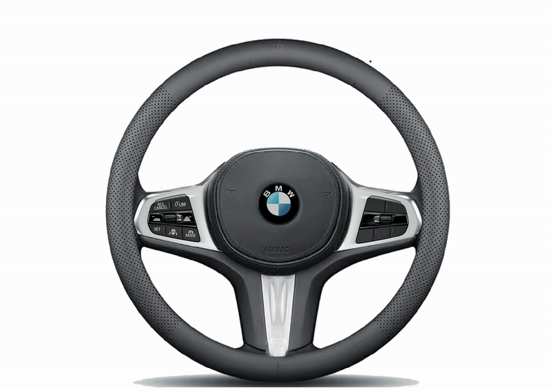
Deine Hände müssen während der automatisierten Fahrt am Lenkrad bleiben, ohne zu lenken. Deine Füße musst du
von den Pedalen nehmen
Bei erfolgreicher Aktivierung leuchtet „DRIVING ASSIST“ grün im Display auf.
Zudem leuchten die Lenkradlichter grün. Das Auto fährt dann teilautomatisiert
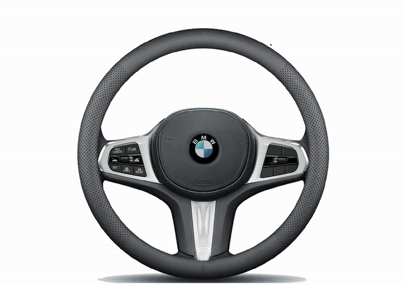
Deine Hände müssen während der automatisierten Fahrt am Lenkrad bleiben, ohne zu lenken. Deine Füße musst du
von den Pedalen nehmen
Verkehrszeichenassistent
Das Auto erkennt Tempolimits. 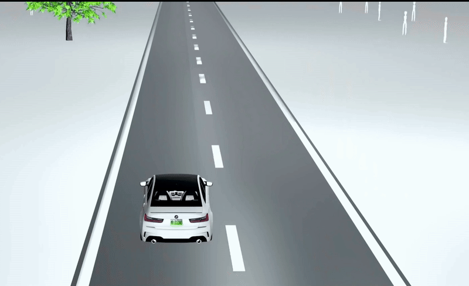 Das erkannte Tempolimit wird im Display angezeigt. Drücke die Set-Taste, um die erkannte Geschwindigkeit zu übernehmen. Das Auto passt sich dann der Geschwindigkeit an. Drücke den Hebel nach oben oder unten, um die Geschwindigkeit individuell zu erhöhen (oben) oder zu
verringern (unten)
Drücke den Hebel nach oben oder unten, um die Geschwindigkeit individuell zu erhöhen (oben) oder zu
verringern (unten)

Abstandsassistent/Adaptiver Geschwindigkeitsassistent (ACC)
Wenn das ACC-Symbol im Display grün aufleuchtet, ist der Abstandsassistent aktiviert. 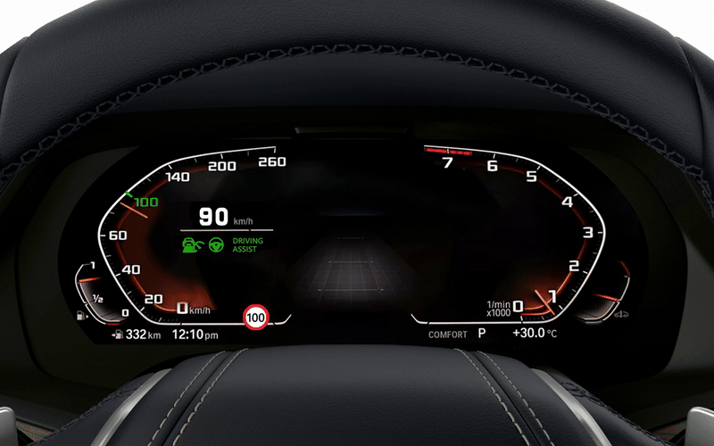 Das Auto hält dann den Abstand zum Vorderfahrzeug automatisch. Es bremst oder beschleunigt, falls nötig. 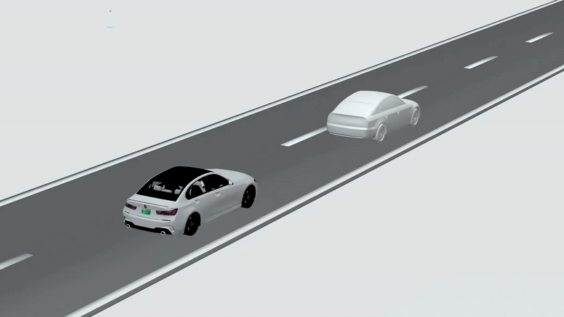 Drücke die Abstandstasten, um den Abstand zum Vorderfahrzeug individuell zu erhöhen (rechts) oder zu verringern (links)
Stauassistent
Erkennt das Fahrzeug eine Stausituation (bei weniger als 60 km/h), wird der Stauassistent automatisch aktiviert. Im Display leuchtet das Symbol TRAFFIC ASSIST ACC-Symbol auf Das Auto beschleunigt, bremst und lenkt dann selbstständig und hält den Abstand zum Vorderfahrzeug automatisch. Das Auto fährt aus dem Stillstand automatisch wieder an ODER: 3. Drücke die Set-Taste,
damit das Auto aus dem Stillstand automatisch wieder losfährt
Das Auto fährt aus dem Stillstand automatisch wieder an ODER: 3. Drücke die Set-Taste,
damit das Auto aus dem Stillstand automatisch wieder losfährt Wenn der Stauassistent aktiviert ist, kannst Du die Hände vom Lenkrad nehmen. Dein Blick muss aber weiterhin auf die Straße gerichtet sein.
Ampelerkennung
Das Auto erkennt Ampeln und zeigt diese im Display an. Rote Ampeln müssen durch Drücken der Set-Taste bestätigt werden, damit das Auto anhält. Nach der Bestätigung erscheint im Display ein grüner Haken (✓). Nach Bestätigung der roten Ampel bremst das Fahrzeug automatisch bis zum Stillstand ab. Das Auto fährt bei Grün automatisch wieder los, wenn Dein Blick auf die Straße gerichtet ist, ohne dass Du das Gaspedal betätigen musst.Lenk- und Spurführungsassistent (LKA)
Wenn das LKA-Symbol im Display grün aufleuchtet, ist der Spurhalteassistent aktiviert. Das Auto hält dann automatisch die Spur. 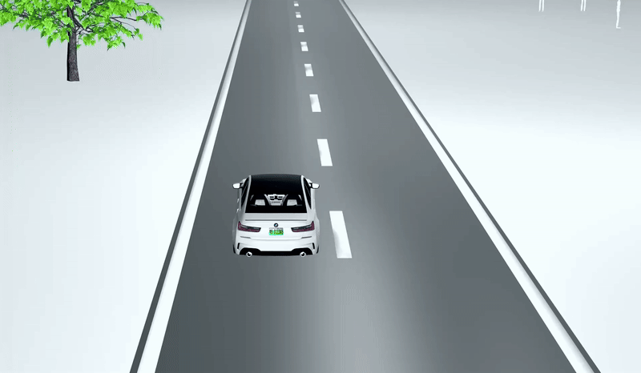Spurwechselassistent
Das Auto wechselt auf mehrspurigen Straßen die Spur, wenn Du den Blinker antippst und es der Verkehr zulässt. Das Auto beobachtet die Umgebung dabei selbstständig. Das Spurwechsel-Symbol zeigt die Richtung
oder
des geplanten Spurwechsels an.
Das Auto macht eigenständig Vorschläge für einen Spurwechsel, sofern der Verkehr dies zulässt. Durch Drücken
der Set-Taste wird der Vorschlag bestätigt und der Spurwechsel ausgeführt.
Das Spurwechsel-Symbol zeigt die Richtung
oder
des geplanten Spurwechsels an.
Das Auto macht eigenständig Vorschläge für einen Spurwechsel, sofern der Verkehr dies zulässt. Durch Drücken
der Set-Taste wird der Vorschlag bestätigt und der Spurwechsel ausgeführt.
 Nach der Bestätigung erscheint im Display ein grüner Haken (✓).
Nach der Bestätigung erscheint im Display ein grüner Haken (✓).
 Sind die Bedingungen für den Spurwechsel nicht erfüllt, erscheint im Display folgender Hinweis:
„Automatischer Spurwechsel, sobald die Bedingungen erfüllt sind“.
Sind die Bedingungen für den Spurwechsel nicht erfüllt, erscheint im Display folgender Hinweis:
„Automatischer Spurwechsel, sobald die Bedingungen erfüllt sind“.

Notbremsassistent
Das Auto erkennt Hindernisse und warnt bei Kollisionsgefahr. Das Auto bremst automatisch zum Stillstand, bevor es zum Zusammenstoß mit einem Hindernis, einer Person oder einem weiteren Fahrzeug kommt.Deaktivierung DRIVING ASSIST
Der DRIVING ASSIST wird beendet, sobald Du die Aktivierungstaste erneut drückst.
Er wird auch beendet, wenn Du lenkst oder das Bremspedal drückst.
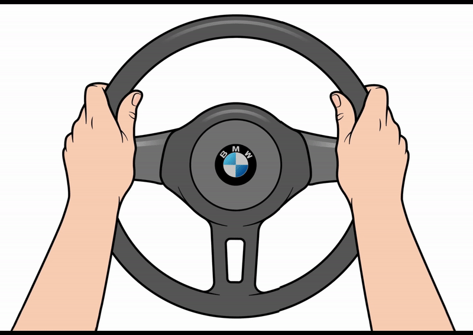
Bei erfolgreicher Deaktivierung, erloschen die Lenkradlichter und das Symbol „DRIVING ASSIST“ im Display,
Risiken und Verantwortung
Das teilautomatisierte Fahren entbindet Sie nicht von der Verantwortung als Fahrer*in.Es funktioniert in den meisten Fällen zwar sehr gut, aber das Auto kann auch Fehler machen, ohne Sie zu warnen. Achten Sie deshalb immer auf den Verkehr und die Umgebung. Sie müssen jederzeit sofort eingreifen können.
Wir zeigen Ihnen hier einige Beispiele möglicher Fehler:
- Das Auto erkennt einen Kreisverkehr nicht und lenkt falsch. 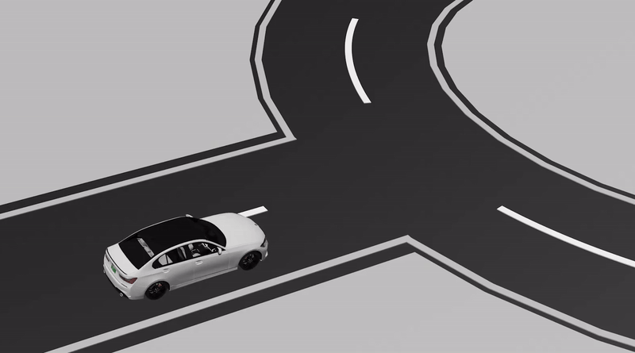
- Das Auto erkennt die Fahrspur nicht wegen einer Baustelle. 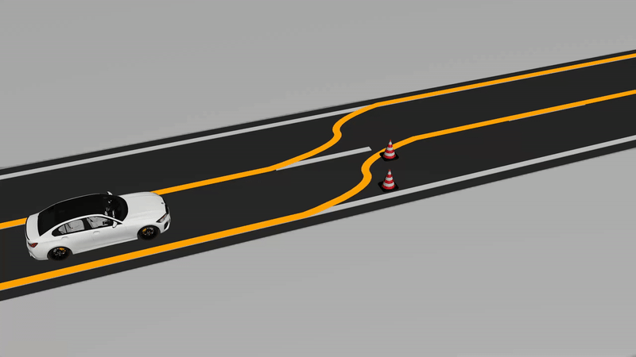
- Das Auto bremst bei einer roten Ampel trotz Betätigung der SET-Taste nicht ab. 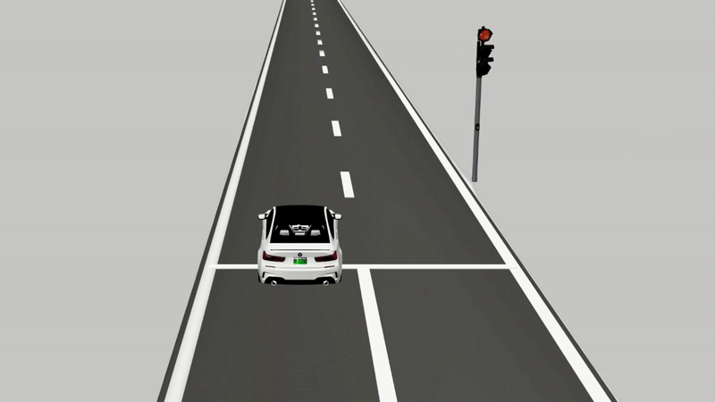
- Das Auto erkennt beim Spurwechsel umliegende Fahrzeuge nicht. 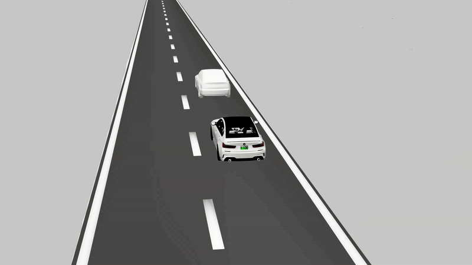